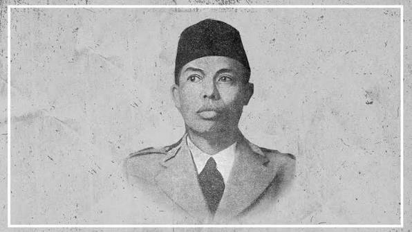
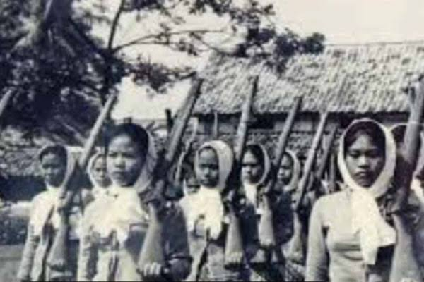
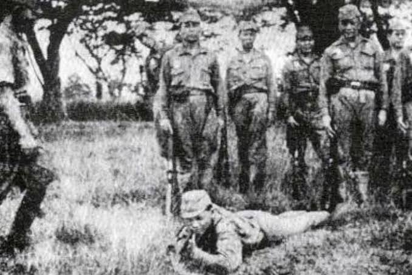
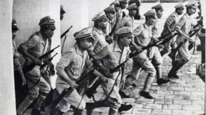
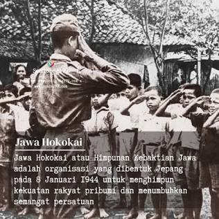
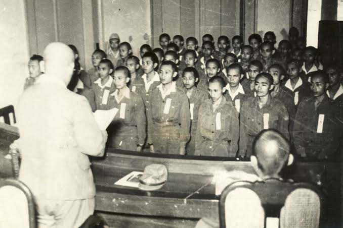
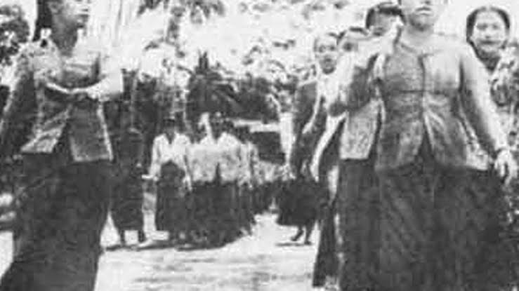
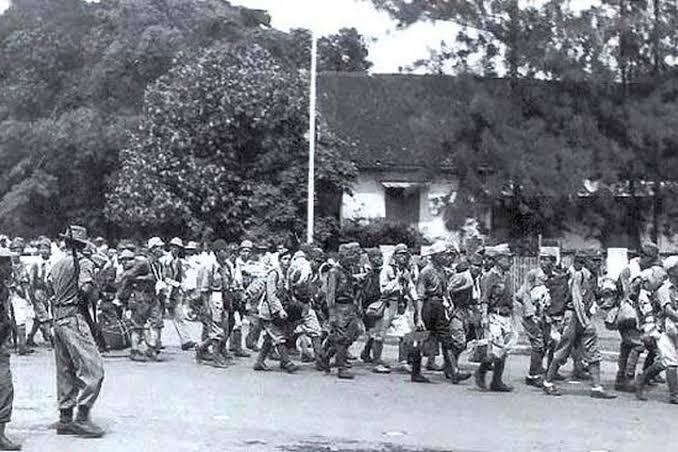

KATEGORI ORGANISASI
Sosial/Sipil
Fokus: Propaganda & tenaga kerja.
Contoh: Gerakan 3A, Putera, Jawa Hokokai.
Organisasi ini dibentuk untuk menarik simpati rakyat dan memobilisasi sumber daya (manusia dan hasil bumi) demi mendukung ekonomi perang Jepang.
Baca Selengkapnya ➔Semi-Militer
Fokus: Keamanan lokal.
Contoh: Seinendan, Keibodan, Barisan Pelopor.
Para pemuda dilatih dasar kemiliteran dan kedisiplinan tingkat tinggi untuk menjaga ketertiban umum, pertahanan sipil, serta membantu tugas kepolisian di daerah masing-masing.
Baca Selengkapnya ➔Militer
Fokus: Pertahanan bersenjata.
Contoh: PETA (Pembela Tanah Air), Heiho, Giyugun.
Pasukan ini dilatih langsung oleh tentara Kekaisaran Jepang dengan persenjataan tempur.
Baca Selengkapnya ➔TIMELINE SEJARAH
HIGHLIGHT ARTIKEL TERBARU / TOKOH

Peran Soekarno dalam PUTERA
Bagaimana para tokoh nasionalis memanfaatkan organisasi bentukan Jepang untuk konsolidasi kemerdekaan...

Dari Daidan PETA hingga Panglima Besar
Sejarah militer Jenderal Sudirman yang berawal dari pendidikan perwira PETA di Bogor...

Fujinkai dan Peran Perempuan
Mobilisasi kaum ibu dan wanita untuk garis belakang pertahanan di masa penjajahan...
GALERI ARSIP HISTORIS





